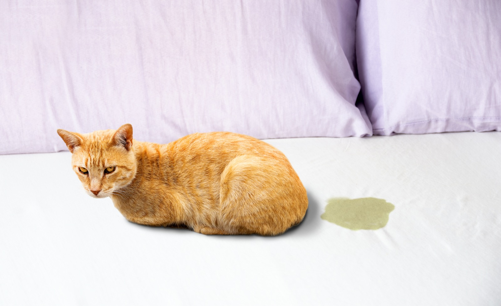

catadoption_pune
catadoption_pune

Short version: paper first, then hot water, then a cleaner that is not phenyl. Most cat accidents in a Pune flat land on tiles, and tiles forgive everything if you get to them before they dry. The bed is the one place worth spending on, and the fix costs less than a bag of litter. And the cleaning cupboard is for the house. Nothing in it goes on the cat.
Just letting you know: Dettol, Savlon, phenyl and cats
Dettol and Savlon are such a part of Indian life that it feels strange to say anything about them. Still, cats cannot tolerate a few things that are completely normal in our homes. Phenyl and the brown antiseptic Dettol are phenol based. The floor disinfectants (Dettol, Lizol) and the antiseptic wipes run on benzalkonium chloride. Cats cannot break either down the way we can, or even the way dogs can, and the cat does not have to drink any of it. Wet paws and then grooming is enough. (The vet sources are in this page's head comment, if you want them.)
Think of it the way we think about a baby in the house. We do not stop using these things, we just get more careful about where, and we keep them off the child. Same with our feline babies. Not on the cat's body, ever. No Dettol, no Savlon, not even diluted, not even on a wound; there are pet products for that. On floors and other surfaces, use with care: diluted, rinsed, and dry before the cat walks there again.
The reason it is easy to miss is that indies are resilient. You will not see a problem the same day. What you may see is a cat that is a little off more often than it should be, tummy or mouth trouble that keeps coming back and nobody can explain, or a life a few years shorter than it should have been.
What I do, honestly: the Dettol is still in the house. It lives on the balcony, from the marking years (more on that below), diluted in hot water and used on the floor only, and the cats stay in until the floor is bone dry. Inside the flat I moved to a plant based cleaner and the tiles are just as clean.
Floors, which is most of it
Blot, do not wipe, because a wipe spreads one puddle across three tiles. Put a kitchen towel or a newspaper on top, press, lift. (We buy the Beco bamboo ones in bulk. Kitten towels get a lot of use in this house, and the newspaper works just as well.) Then hot water on the spot and a proper floor wash. I use Beco's floor cleaner, about two hundred rupees a litre. Coconut based surfactants, no sulphates, no phenol, and it rinses off without a residue. I should say that "pet safe" is the brand's own word and nobody independent has checked it. What I can say is that nothing in it belongs to the two families that hurt cats, and I like what the brand is trying to do in general. The free version is hot water and a squeeze of dishwash, mopped and then mopped again with plain water. That removes the accident. It does not disinfect, and for a healthy cat's pee on a tile you do not need to.
The dried up one you find two days later needs something with more bite. For those I use the Beco kitchen cleaner, the grease one, because it is always in the house for the hob and it lifts a dried stain off tile without fumes. Baking soda paste left for ten minutes does the same job, slower.
The bed
Kitchen towels for the liquid, strip the sheet, ordinary wash in the machine. That is the whole routine, and it is that short because of one purchase: a waterproof mattress protector under the sheet. Ours is from Sleepycat, about six hundred and fifty rupees, and it is the best purchase I have made as a cat person, because a mattress you cannot wash and a cat who will one day be sick on it is otherwise a bad combination. The zero rupee version is a sheet of thick plastic or an old rexine cover between the mattress and the sheet. It crackles, and it works.
The sofa
Rare in our house. The cats live in my room and on the balcony, and the living room sofa wears the temporary cotton covers every Indian home already has (cats or no cats). If a cover gets it, it goes in the wash. If the sofa itself gets it, kitchen towels lift the liquid, one antiseptic wipe goes on the spot with care, since those wipes are the same family as the floor disinfectants, so it stays on the stain and the cat stays off it until it is fully dry, and then I book a sofa shampoo from Urban Company rather than fight upholstery myself. That has happened twice in several years.
On the cat, only these
Pet wipes, the unscented ones sold for cats, for the leftover gift on the bum floof. Not Dettol, not Savlon, not a little of anything from the cupboard. This is the one rule on this page with no "with care" version. Two things worth knowing while you are there: a cat dragging its bottom across the floor is trying to get something off, so check. And indie cats have short coats, so this whole section is a much bigger deal for a Persian, which is one more reason an indie is the easier cat to live with.
When it is not an accident: the marking years
When our boys reached adulthood the spraying was wild. Four cats in one flat means more tension, and marking is what tension looks like. I do not think you change that behaviour. You manage it. What worked here: no piles of clothes on the floor, ever, because they preferred those over anything else. More vertical space, which for us meant french windows all along the balcony, netting, and ledges and height out there, where they now spend most of the day. And the balcony floor done properly with hot water so yesterday's mark is not an invitation for today's. Indian homes help you with this, since there are hardly any carpets or soft floors to hold a smell.
Where this stops being a cleaning problem: a cat straining in the box, going often and passing little, crying while peeing, or any blood, is a vet today. For a male cat it can be a blockage, which is an emergency. A cat that was clean for years and suddenly is not, with nothing changed in the house, is also a vet question before it is a behaviour one. Questions worth taking to the vet: Is this marking or a bladder problem? My neutered boys still mark; what would you change in the house? Is there anything I should stop cleaning with?
The routine, on one line
☐ Paper first, blot · ☐ Hot water, then the plant based cleaner · ☐ Protector on every mattress a cat can reach · ☐ Covers on the sofa · ☐ Cupboard for the house, with care; pet wipes for the cat · ☐ Clothes off the floor, cats up high.
Questions? DM us.
We're @catadoption_pune on Instagram — DMs are how everything here works. If your cat's accidents worry you, say so in the DM and we will point you at a vet, not a product.